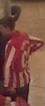
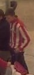
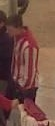

Files play in real time and loop. If processing falls behind, frames are skipped so the video never slows down.
02
Find people
YOLO26s looks for the "person" class only. It finds 7 people here, each with a box.
03
Follow them

t − 5

t − 1

t
track #276
ByteTrack links the boxes from frame to frame, so a person keeps one id and their old evidence is not thrown away.
04
Describe each crop
→
Embedding Gemma-2
→768-d
e ← 0.7·e + 0.3·new score = e · query
A crop is re-encoded only every 10 frames, in one GPU batch. The running average (EMA) smooths out a single bad crop.
05
Score & choose
The cosine score against the query. Only the top person can win, and only if they clear both gates.
(f) the result on screen, with the query “a man in a red and white striped shirt”
(g) two gates and a lock, and why each exists
1
score ≥ 0.45
With the example descriptions, the right person scored 0.45–0.76. When that person was out of view, strangers peaked at 0.40–0.42. A threshold of 0.45 keeps the box off strangers rather than forcing a guess.
2
box height ÷ width ≥ 1.2
RSTPReid photos are full-body crops. Head-only boxes at the frame edge and boxes that merge two people do not look like that, and their scores are unreliable. They are still drawn and scored, but they can never win.
3
one model lock
Search and video share one GPU model behind a lock. A new description is encoded once, and the very next frame already uses it, within about 150 ms of the click.
≈ 26 fpsend to end on 768×576 video
55–100fps in steady state
10×fewer encodes than per-frame
Figure 5. The image-search model works on video once a video is turned into a stream of person photos. A detector proposes people (02), a tracker keeps their identities (03), and each crop's appearance is averaged over time (04) before it is compared with the sentence (05). All scores in this figure are the tracker's real output for this frame. The winner (0.72) beats the runner-up (0.40) by a wide margin.